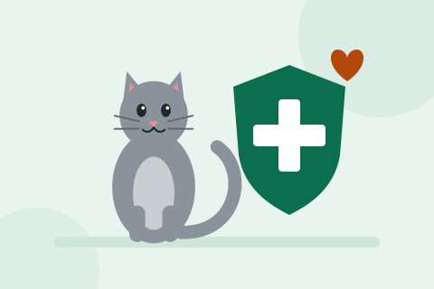

Castração Solidária

Saúde animal Gratuito
Mutirões de castração gratuita para cães e gatos de famílias de baixa renda. A castração controla a população de animais nas ruas, diminui brigas e fugas e previne doenças como tumores de mama e infecções uterinas.
Objetivos
- Realizar 1.500 castrações gratuitas por ano;
- Reduzir o número de ninhadas abandonadas no bairro;
- Orientar os tutores sobre os cuidados no pós-operatório.
Público atendido
Famílias inscritas no CadÚnico e protetores independentes cadastrados.
Quero ajudar neste projeto